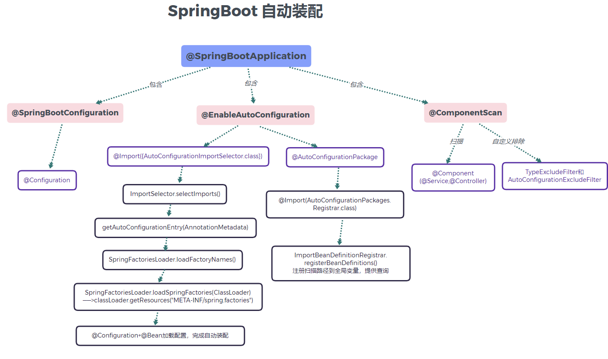
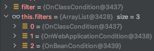
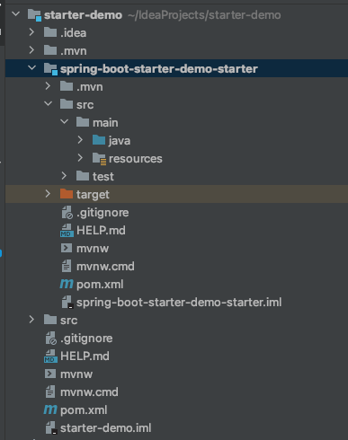
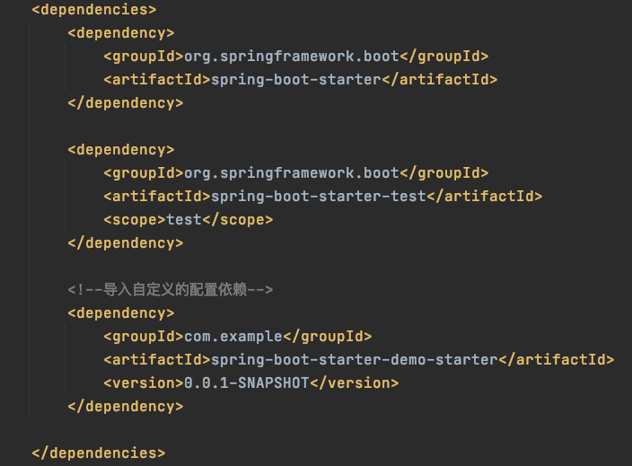
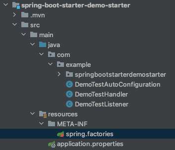
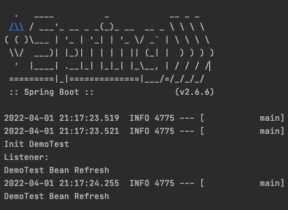

SpringBoot自动装配原理与实践
本文最后更新于：4 天前
自动装配原理
首先看一段@SpringBootApplication的源码：
1 | |
核心注解
如图所示，@SpringBootApplication注解中，除了元注解之外，主要包含了三个核心注解，分别是：
@SpringBootConfiguration：@SpringBootConfiguration继承自@Configuration，二者功能也一致，标注当前类是配置类，并会将当前类内声明的一个或多个以@Bean注解标记的方法的实例纳入到spring容器中，并且实例名就是方法名。@ComponentScan：该注解默认会扫描该类所在的包下所有的配置类—由@Component注解（衍生注解包括@Service，@Controller和@Repository）修饰的bean。这个注解还支持@Filter注解排除某些不扫描的bean。如源码所示，容器中将排除TypeExcludeFilter和AutoConfigurationExcludeFilter。@EnableAutoConfiguration：真正启用SpringBoot的自动配置
1
2
3
4
5
6
7
8
9
10
11
12
13
14
15
16
17
18
19
20
21
22
23
24
25
26
27
28
29@Target(ElementType.TYPE)
@Retention(RetentionPolicy.RUNTIME)
@Documented
@Inherited
@AutoConfigurationPackage
@Import(AutoConfigurationImportSelector.class)
public @interface EnableAutoConfiguration {
/**
* Environment property that can be used to override when auto-configuration is
* enabled.
*/
String ENABLED_OVERRIDE_PROPERTY = "spring.boot.enableautoconfiguration";
/**
* Exclude specific auto-configuration classes such that they will never be applied.
* @return the classes to exclude
*/
Class<?>[] exclude() default {};
/**
* Exclude specific auto-configuration class names such that they will never be
* applied.
* @return the class names to exclude
* @since 1.3.0
*/
String[] excludeName() default {};
}

@EnableAutoConfiguration
@EnableAutoConfiguration又包含两个重要的注解，分别是==@AutoConfigurationPackage==和==@Import(AutoConfigurationImportSelector.class)==
其中@AutoConfigurationPackage注解被@Import(AutoConfigurationPackages.Registrar.class)修饰，通过ImportBeanDefinitionRegistrar.registerBeanDefinitions()来存储导入配置里的基础包(base packages)，其实从名字就可以看出，就是注册扫描路径里的组件到容器的全局中，提供查询。
@Import(==AutoConfigurationImportSelector==.class)中导入的AutoConfigurationImportSelector继承体系如下(2.6.5版本)：
1 | |
可以看出，AutoConfigurationImportSelector 类实现了 ImportSelector接口，实现了这个接口中的 selectImports方法，该方法主要用于获取所有符合条件的类的全限定类名，这些类需要被加载到 IOC 容器中。
如果@Import引入的是ImportSelector的子类，将它添加到DeferredImportSelectorHandler实例中，预留到所有的配置类加载完成后统一处理自动化配置类
此类（ImportSelector）的主要功能是：根据给定的条件（通常是一个或多个注解属性）判断要导入哪个配置类。
1 | |
其中的过滤器其实就是@OnXXXCondition注解，意思是满足XXX的条件才能被视为自动配置类：

如@ConditionOnClass注解：
1 | |
实现一个自定义的Starter
从上述流程中我们其实已经知道了SpringBoot自动配置的原理，可以选择实现我们自己的Starter。
为什么要自定义starter
starter是一组方便的依赖描述符，当我们使用它时，可以获得所有需要的Spring和相关技术的一站式服务，典型的如spring-boot-starter-web，引入之后，自动引入所有有关spring web项目相关的依赖。如果我们在开发中有一些独立于业务之外的配置模块，我们将其封装成一个starter，就可以直接在pom文件中引入依赖，springboot会为我们实现自动装配，更加方便我们的开发。
1. 新建一个子工程项目
在我们的主工程下面新建一个子工程项目spring-boot-starter-demo-starter

2. 引入依赖
在主工程的pom文件中插入自定义的starter

3. 编写Starter中代码
DemoTestHandler
用于注入测试的Handler
1 | |
监听器 DemoTestListener
监听器肯定是对应着一系列的事件的，有个事件叫做ContextRefreshedEvent, 表示Spring的上下文刷新完毕，所有的Bean都已经初始化完成，Spring的启动流程即将结束。通过加入监听器我们可以在DemoTestHandler初始化完毕之后做一些事情。
1 | |
配置DemoTestAutoConfiguration
通过注解@Bean注入DemoTestHandler和DemoTestListener到容器中，@ConditionalOnClass表示监视器依赖于DemoHandler
1 | |
加入自动装配列表
在resources目录下新建META-INF/spring.factories文件，将配置类DemoTestAutoConfiguration加入启动时的自动装配

1 | |
4. 启用Test进行自动装配测试
1 | |
输出结果：

本博客所有文章除特别声明外，均采用 CC BY-SA 4.0 协议 ，转载请注明出处！